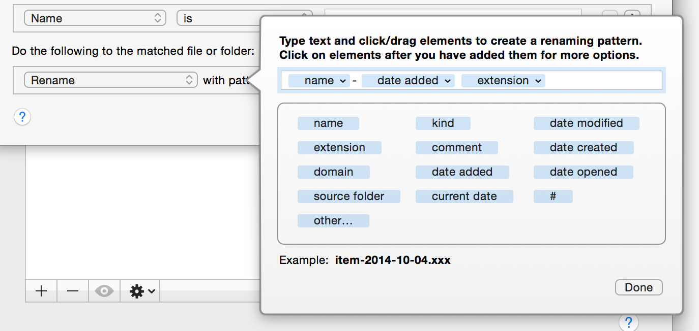

Editing patterns
For certain actions, you need to specify a pattern. A pattern is a template of text and special attributes. It is used by the action to generate text when run. For instance, when renaming, you can add the file's added date. Since you don't know what the date will be until the rule runs and that the date will vary depending on the file, you can use an attribute in the pattern to represent that date. When the rule runs, it will substitute in the actual date.
When you edit a pattern, the interface will expand as shown here. Note that depending on the action, the attributes available will change.

To specify text, just type in the field as you normally would. Any text entered will be used as is. Below the field, you will find various attributes. These represent different attributes of the file being matched. By clicking on them or dragging them into the field, you tell the rule to substitute the actual value when it runs. The example field at the bottom shows a sample of how it will look when run (of course, the actual text will vary).
If you hover your mouse over an attribute after adding it to the field, you will see that an arrow appears. This indicates you can click on it for more formatting options. Depending on the type of attribute it is you will be given different options:
- For text-based attributes, you can change the capitalization. You can select between title case (the first letter of every word is capitalized), lowercase (all letters are set to lowercase), upper case (all letters are capitalized) and no change (leave the text as is). You can also do text replacement by specifying text that will be replaced with some other text.
- For number-based attributes, you can set the minimum number of digits. Select "More…" to select more than 4 digits. If a number has fewer digits than what you set here, extra zeroes will be added to the left. For instance, if the number is "1" and you set this attribute to use a minimum of 3 digits, then the resulting number will be "001". This will never chop off digits if the number happens to have more digits than what you set. In addition to setting the digits, you can adjust the actual value of the number either up or down.
- For attributes representing a list, you can choose to only use the first item, the last item or show all items, separated by commas. You also have the option of setting the format for the individual elements so if the attribute is a list of text items, you can also set capitalization. Note that this format applies across all items in the list.
- For attributes representing dates, you can further edit the date format. See Editing date formats for more information. You can also adjust the date value itself, allowing you to, say, nudge the date a month ahead.
- The domain attribute has special options to indicate how much of the domain to show.
The "other" attribute is special. It is a stand-in for any available Spotlight attribute. When you drop it onto the field, you will be given the chance to select which Spotlight attribute you'd like that token to represent. Depending on the attribute, you may have more options when clicking on it after adding it to your pattern.
See also
Editing date formats
Using match patterns
Rule Reference
Rule Topics